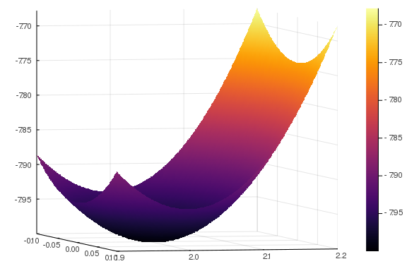
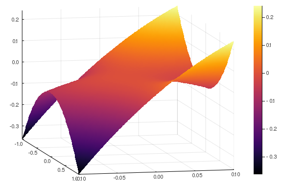

Homework 3 solution¶
-
(Exercises from Beck Ch 2)
-
(Beck 2.17) Here f(x_1,x_2) = 2x_2^3-6x_2^2+3x_1^2x_2,
-
The gradient is
\nabla f(x) = \bmat 6x_1x_2 \\ 6x_2^2 - 12x_2 + 3x_1^2\emat, \qquadThere are two stationary points: x^* = (0,0) and x^* = (0,2).
-
The Hessian is
\nabla^2 f(x) = \bmat 6x_2 & 6x_1 \\ 6x_1 & 12x_2-12 \ematAt x^* = (0,0), $$\nabla^2 f\left(\bmat 0 \ 0 \emat \right) = \bmat 0 & 0 \ 0 & -12\emat $$
which is negative semidefinite. (Diagonal with all non-positive values, and one 0.) We cannot tell if it is a local minimum or maximum or saddle point. At x^* = (0,2), $$\nabla^2 f\left(\bmat 0 \ 2 \emat \right) = \bmat 12 & 0 \ 0 & 12\emat $$
which is positive definite. (Diagonal with all strictly positive values). This point must be a strict local minima.
-
At x = (0,2), it is clearly a strict local minimum.
 At x = (0,0), it is a saddle point.
 -
-
(Beck 2.19) We first show that forward implication. Since \nabla^2 f(x) = A \succeq 0 for all x, if we find any point in which \nabla f(x) = 0, then we have found a global minimizer of this function. If b\in \range(A), then there exists a y where Ay = b. Taking x^* = -y gives the stationary point we need.
Now assume that b\not\in \range(A). Then, this means that b = u+v where u\in \range(A) and v\in \vnull(A^T) = \vnull(A) where v\neq 0. Now take any x = \gamma v for any scalar c. Then
f(\gamma v) = \frac{\gamma ^2}{2}\underbrace{v^TAv}_{=0} + \gamma \underbrace{b^Tv}_{=v^Tv} + c = \gamma \|v\|_2^2 + c.Picking \gamma\to -\infty shows that f(\gamma v) \to -\infty is unbounded below.
-
-
To compute \tr(A^TB), we must first form the matrix product A^TB which requires O(n^2m) flops and O(n^2) storage. Then extracting the trace is an additional O(n) flops and O(1) storage. So, in total, O(n^2m + n) flops (or O(n^2m) as the dominating term) and O(n^2+1) storage (or just O(n^2)).
To compute the right and side, we do not need any additional storage, and just require O(mn) flops.
Now if m \gg n, this is a significant reduction in storage, and if n is large is a significant reduction in flops. The key takeaway is that, for proper scalability, though many things are equivalent, how you implement it matters.
-
Here, f:\R^n \rightarrow \R is a twice continuously differentiable function that has L-Lipschitz gradient.
-
The directional derivative of \nabla f at x in the direction v is
\begin{align} \nabla^2 f(x) v &= \lim_{t \searrow 0} \frac{\nabla f(x+tv)-\nabla f(x)}{t}.\\ \end{align}So,
\begin{align} \|\nabla^2 f(x) v\|_2 &= \|\lim_{t \searrow 0} \frac{\nabla f(x+tv)-\nabla f(x)}{t}\|_2\\ & = \lim_{t \searrow 0} \|\frac{\nabla f(x+tv)-\nabla f(x)}{t}\|_2\\ & \leq \lim_{t \searrow 0} \frac{L\|tv\|}{t}\\ & = L\|v\|_2 \end{align}where second line follows from continuity of norms and third line follows from L-Lipschitz of gradient.
-
From above, we have that any fixed x satisfies the inequality \|\nabla^2 f(x) v\| \leq L\|v\|_2 for all v.
Fix x and let (\lambda_+,v_+) be the maximal eigen-pair of the matrix \nabla^2 f(x). So, \|\nabla^2 f(x) v\| \leq L\|v\|_2 for all v gives \lambda_+ \leq L. Thus, all eigenvalues of \nabla^2 f(x) is bounded from above by L. As x is arbitrary, we get that for all x, the eigenvalues of \nabla^2 f(x) is bounded from above by L.
-
Using Taylor's remainder theorem, we get
f(v) = f(w) -\nabla f(w)^\intercal (v-w) + \frac{1}{2}(v-w)^\intercal\nabla^2 f(\xi) (v-w),where v, w \in \R^n and \xi \in [v,w]. Since \|\nabla^2 f(x) v\| \leq L\|v\|_2 for all v and x, we also have v^\intercal \nabla^2 f(x) v \leq L\|v\|_2^2 all v and x. Thus,
f(v) = f(w) +\nabla f(w)^\intercal (v-w) + \frac{L}{2}\|v-w\|_2^2. -
A gradient descent step is x_{k+1} = x_k - \alpha \nabla f(x_k). Substituting v = x_{k+1} and w = x_k, we get
\begin{align} f(x_{k+1}) &= f(x_k) +\nabla f(x_k)^\intercal (x_{k+1}-x_k) + \frac{L}{2}\|x_{k+1}-x_k\|_2^2\\ & = f(x_k) -\alpha \nabla f(x_k)^\intercal \nabla f(x_k) + \frac{L\alpha^2}{2}\|\nabla f(x_k)\|_2^2\\ & = f(x_k) -\alpha \|\nabla f(x_k)\|_2^2\left( 1 - \frac{L\alpha}{2}\right)\\ \end{align}Note that \alpha\|\nabla f(x_k)\|_2^2( 1 - \frac{L\alpha}{2})>0 if x_k is not a stationary point and 0 < \alpha < \frac{2}{L}
-